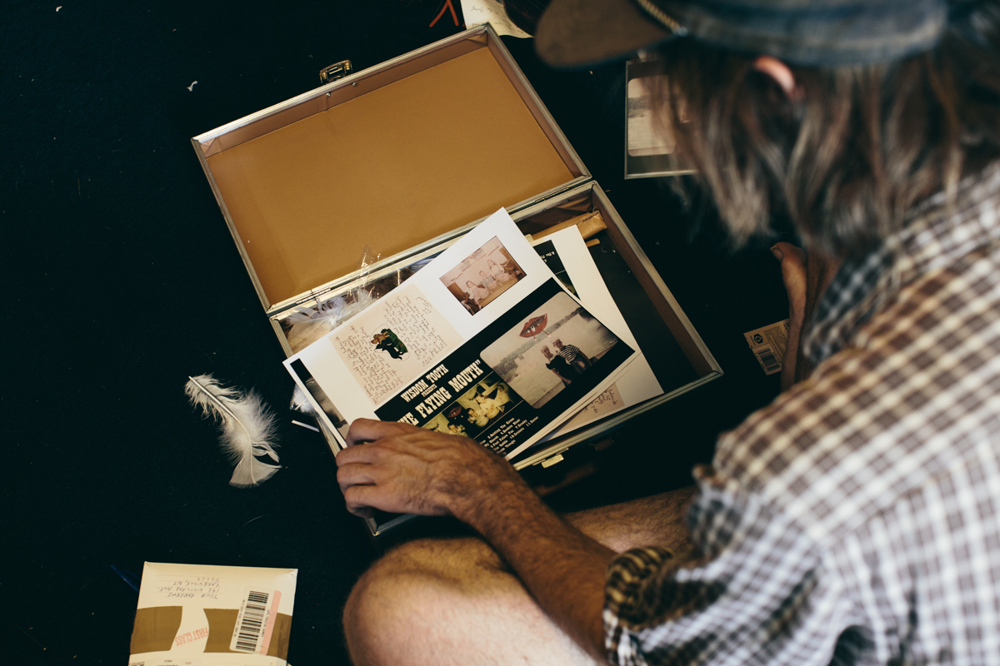

FEATURE 1 – WORDS BY Jeffrey Silverstein
Story Of An Artist
Returning to any artistic endeavor after a prolonged hiatus can oftentimes prove to be arduous. There are certain questions, some far-flung and existential, others technical and specific that can cloud the true spirit a creator strives to attain. As more time elapses, it becomes easier and easier to simply ignore ones craft and attend to matters elsewhere. Self-doubt, procrastination, and general laziness together create a heavy fog of the mind that requires a certain level of allegiance to the creative psyche to lift.
For someone like John Andrews, it's apparent there was never any fog to begin with. Nor are there any questions. He doesn't allow room for them. Upon retracing the steps leading to the reappearance of his Wisdom Tooth alias, it's evident that John is in every stretch of the word a true artist, incapable of ceasing to create.
Having come from a musical background of jazz musicians and navy-band performers, music was "never something that was forced on me," Andrews explains during a rare moment of downtime during his fourth European tour this year with gypsy-folk act Quilt. After being "pushed" to take up violin and piano at an early age, it wasn't until his father,a musician himself passed down a '74 Fender sunburst Stratocaster that John began to experience that blanket, holy-shit feeling that comes with writing your first material.
At age 16, foundations for some of the earliest Wisdom Tooth songs were being laid in a suburban New Jersey home, unbeknownst to nearly all friends and family. He had Garageband, some cassette recorders, and the nervous energy of a kid navigating the murky waters that are high school. While many teenagers would be debating which type of hair-gel to use or how they plan to ask out their crush, John on the other hand was quietly becoming a well-oiled songwriter, animator, and managing his own skateboard company, the Vinyl Children's Skateboard Club.
An outsider at heart, the music scene in New Jersey was "always a much different one that I wanted to be apart of," he admits. Not particularly keen to start a hardcore or screamo act, he opted for his Dylan and Beatles records,never befriending the majority of kids who were performing in bands. Eventually finding his niche amongst some like-minded groups like PA's now-defunct Raise Up Roof Beams, John began to perform at house shows in and around central New Jersey, simultaneously plotting short tours via MySpace.
Having met John before the onset of a 2009 tour reaching as far as Burlington VT, there was an immediate sense that he was always one, if not many steps ahead of the game. Ideas were visibly pouring out of his head. There were moments in the van where instead of reading or sleeping (most of what I was doing), John was cranking out new songs on a ukulele and a notepad. In my head I was like, "who is this kid?" Upon waking in Boston one morning at DIY mainstay the Whitehaus, John was nowhere to be found. When we finally heard from him again, he casually informed us that he had gone to a friends house to record Pianoskin, a collection of songs for his first release via Spookytown, a label run by members of psych-pop act Great Valley. This was all before 10 AM. Our trip to Boston also marked the first time John would meet future Quilt bandmates Anna Rochinski and Shane Butler, with whom we shared a bill with that evening. Although immensely shy at the time, often opting to sing without a microphone, it was clear that John was beginning his crusade as a an artist.
After that tour, Andrews seemed to be untouchable in terms of output. Between Anuket, an EP entirely written and recorded during a trip to Egypt and multiple LPs (Baby Neptune, The Flying Mouth) chronicling some of his most notable, recurring fictional characters, he would continue touring sporadically throughout the US between 2009-2011 . With every release came a slew of hand-drawn animations, music videos, and drawings to accompany. Yet again adding to his arsenal of tricks. "I think it's weird if someone is an artist in one sense, but not the other," he tells us while describing his connection to visual art. For him drawing and making music go "hand-in-hand," although "some might argue against that point." Lyrically and stylistically, John is from another planet. Capable of telling even the most dismal tale with a cartooned sense of hope, it's hard not to conjure comparisons to Michael Hurley and Daniel Johnston.
Having begun to spend more time there, John would leave New Jersey in February 2011 to move permanently to Boston, thus officially marking his entrance as the drummer for Quilt. Wisdom Tooth would be put on hold, but certainly not forgotten. Speaking with John around that time was incredible, as he was about to become a part of one of his favorite bands. Something that would happen again in 2013 when he would take over keys for Woods. This was an exceptional time to watch Quilt perform live, John adding a magic to their sound not previously heard. An unreasonably pleasant and appreciative person to work with, John can't but help be an asset to any project he touches.
What has ensued since then has been a never ending cycle of writing, recording, and touring, both with Woods and Quilt. Between the two, "I'm pretty sure I've played over 200 shows this year alone," he divulges. "This kind of lifestyle was always something I wanted to do since I was a little kid...I always knew that I needed travel and feel like I've worked towards this for a very long time." Speaking of his grueling travel schedule, he also recounts the difficulties involved. "Me being away so much caused my whole living scenario in PA to kind of fall apart," he tell us, lamenting over the comfort only home can provide. However it was in Lancaster, on a third floor studio where he would begin to revisit Wisdom Tooth material left in the stratosphere for many years.

While finishing up our conversation, John, now 24, let us know that this will be his first and last vinyl Wisdom Tooth release. Ahead of a full-length being released sometime next year, he’ll be releasing music under John Andrews and the Yawns. Earlier we had discussed the idea of both our taste-buds and music taste changing every seven years. Having known John personally for just about that long, it is with the utmost certainty that I know he will continue to create some of the most lucid and timeless work regardless of stage-name. "23 years old was definitely the weirdest year I've ever been alive," he added. Long live John Andrews.